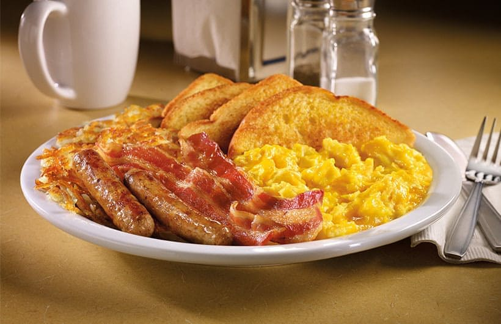
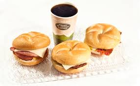

Favorite Breakfast Foods
 
Breakfast
Breakfast is the most important meal of the day, also my favorite.
Mostly because coffee and the great start it can give any day
- Eggs
- Scrambled
- Over Easy
- Omlet
Homefries
Toast
BACON
BagelsDonuts
The list could go on and on I didn't even mention drinks or muffins but you should get the point
Home Page
Lunch Favorites
Dessert Favorites